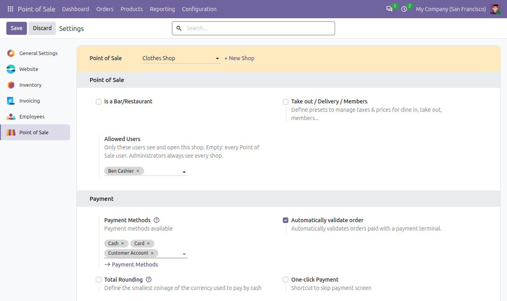
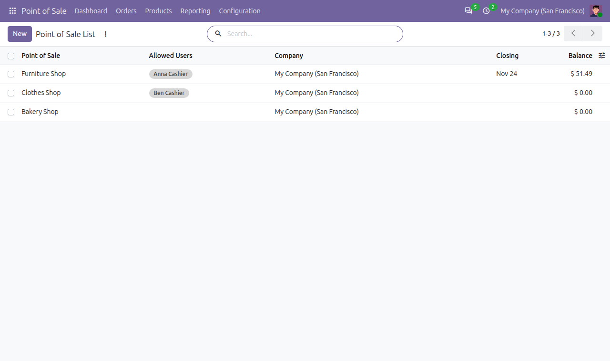
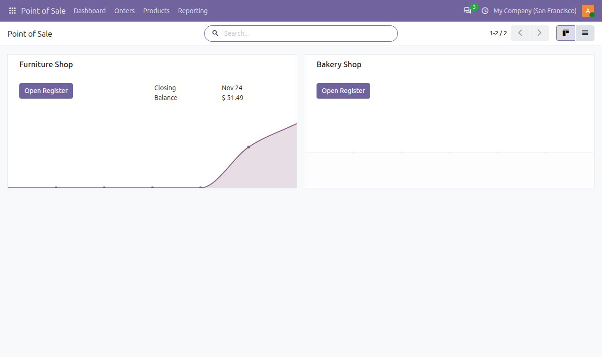
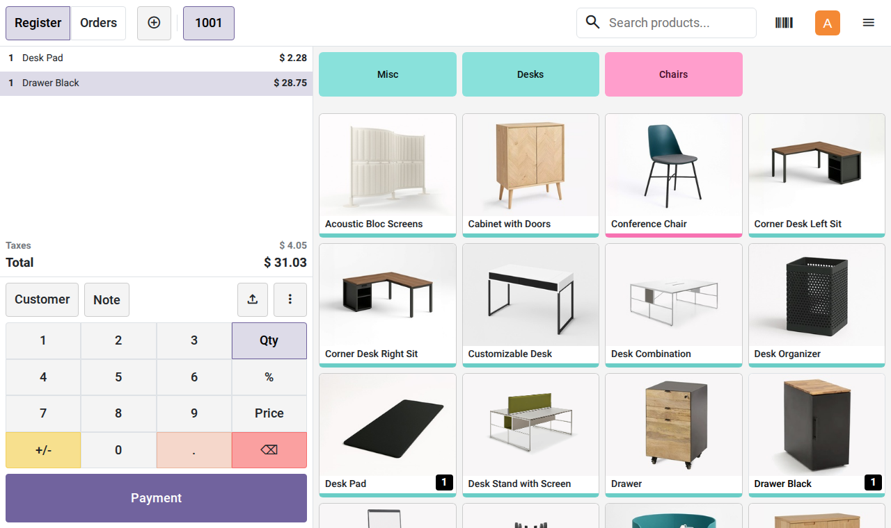
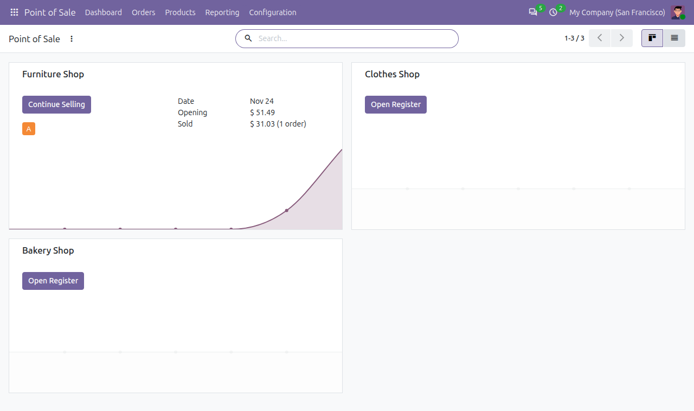

POS Shop Access per User - Restrict Point of Sale by User
Each cashier sees and opens only the Point of Sale shops you allow. Administrators keep every shop.
Odoo 20
Point of Sale
Free
What it does
In standard Odoo every Point of Sale user sees every shop on the dashboard and can open any
register. With several branches or counters that is a mess, and a risk. This module adds an
Allowed Users list to each shop.
- Cashiers see only their shops: the ones that list them, plus shops with an empty list.
- No back door: a direct link to another shop's register sends the cashier back to the dashboard, no session is opened.
- Administrators see everything: Point of Sale administrators and Settings administrators always see every shop.
- Empty list = open to every Point of Sale user, so nothing changes until you fill it in.
- Selling, payments and closing the register work as usual for the allowed cashier (tested as a Point of Sale user without any other rights).
How to use
1. Choose who may open a shop
Point of Sale › Configuration › Settings: pick the shop at the top, then fill in Allowed Users and save.

2. See all shops and their users at a glance
Point of Sale › Configuration › Point of Sales shows an Allowed Users column.

3. The cashier only sees the allowed shops
Anna is allowed in the Furniture Shop; the Bakery Shop is open to everyone; the Clothes Shop is Ben's and does not appear.

4. She sells as usual

5. The manager still sees every shop
